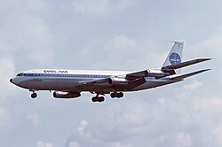

Il mito di Icaro
Fin dall'antichità l'uomo ha sognato di sollevarsi in volo, come mostra il mito di Icaro. Secondo la tradizione greca, egli tentò di fuggire dal labirinto di Creta con ali costruite dal padre Dedalo, ma avvicinandosi troppo al Sole la cera si sciolse provocandone la caduta. Il racconto simboleggia il desiderio umano di superare i propri limiti e, insieme, i pericoli legati alla mancanza di conoscenza e controllo, temi centrali nella storia dell'aviazione.La vera svolta si ebbe nel 1903 con i fratelli Wright, che a Kitty Hawk effettuarono il primo volo controllato di un aeromobile a motore. Il loro contributo decisivo fu l'introduzione del controllo sui tre assi tramite svergolamento alare e superfici mobili. Questo sistema rese il volo governabile e sicuro, trasformandolo in un mezzo ripetibile e affidabile. Le dimostrazioni del 1908 in Europa e negli Stati Uniti sancirono l'affermazione dell'aeroplano.

L'aviazione nelle guerre mondiali
Con la Prima guerra mondiale l'aeronautica assunse un ruolo esclusivamente militare. Gli aerei, inizialmente usati per osservazione, furono rapidamente armati e specializzati in caccia, bombardamento e supporto alle truppe. Il conflitto favorì innovazioni come il miglioramento dei profili alari, l'aumento della potenza dei motori, le mitragliatrici sincronizzate e l'uso sistematico degli strumenti di bordo. In questo periodo emersero costruttori come Junkers, che introdusse strutture interamente metalliche.Nel periodo tra le due guerre l'aviazione visse una fase "eroica", segnata da imprese individuali e voli record. In Italia ebbero particolare rilievo le trasvolate oceaniche e le crociere aeree, che unirono progresso tecnico e celebrazione nazionale. Con il tempo, però, l'aumento della complessità tecnologica portò al superamento del post-eroismo, sostituendo l'esaltazione del singolo con una visione più industriale e scientifica dell'aviazione. La Seconda guerra mondiale determinò un'ulteriore accelerazione dello sviluppo aeronautico. L'aereo divenne centrale nella strategia militare, con bombardieri a lungo raggio, caccia sempre più veloci e produzione di massa. Tra le principali innovazioni vi furono il carrello retrattile, le cabine pressurizzate, i sistemi radar e soprattutto i primi motori a reazione, inizialmente di impiego militare. Nel secondo dopoguerra l'aviazione raggiunse una maturità tecnologica senza precedenti. Le conoscenze sviluppate durante il conflitto furono progressivamente indirizzate verso applicazioni civili. Il desiderio di volare, presente fin dai miti antichi, divenne una forza razionale e organizzata, capace di guidare un'evoluzione tecnico-scientifica continua.

l'era dei jet e del Boeing 707
Uno degli obiettivi principali della ricerca aeronautica fu il superamento dei limiti di velocità e altitudine. Il volo ad alta quota, reso possibile dalla pressurizzazione, permise di operare in strati atmosferici più stabili, riducendo la resistenza aerodinamica. Ciò comportò un ripensamento progettuale: fusoliere più resistenti, ali a freccia per le alte velocità e l'uso di leghe di alluminio sempre più evolute. La transizione dai motori a pistoni ai motori a reazione rappresentò un punto di svolta definitivo. La propulsione a getto, nata in ambito militare, superò i limiti dell'elica alle alte velocità. I motori a reazione consentirono maggiori velocità e una migliore regolarità sulle lunghe distanze, rendendo possibile l'attraversamento degli oceani senza scali e trasformando l'aviazione in un sistema di trasporto globale affidabile. Parallelamente si svilupparono innovazioni nei sistemi di navigazione e controllo. Radar, radiofari e strumenti sempre più precisi migliorarono la sicurezza, permettendo il volo anche in condizioni meteorologiche difficili. Il pilota passò da figura eroica a elemento di un sistema complesso basato su tecnologia, procedure standard e supporto da terra. In questo contesto si colloca l'affermazione del Boeing 707 negli anni Cinquanta. L'aeromobile segnò una svolta sia in ambito civile sia militare: l'uso dei motori a getto ridusse drasticamente i tempi di viaggio intercontinentali, rendendo il trasporto aereo globale. Allo stesso tempo, la cellula del 707 fu adattata per applicazioni militari avanzate, dando origine all'E-3 Sentry, utilizzato dalla NATO come sistema AWACS per la sorveglianza e il controllo dello spazio aereo. Questo dimostrò la grande versatilità e l'importanza strategica del progetto. L'evoluzione dell'aviazione dimostrò così che il desiderio di volare non era solo simbolico, ma un potente motore di progresso scientifico e tecnologico. La ricerca di prestazioni sempre maggiori spinse l'uomo a superare i propri limiti, trasformando il cielo in uno spazio operativo. Con i grandi jet di linea, il volo divenne una componente essenziale della società moderna, aprendo una nuova fase nel rapporto tra uomo, tecnologia e mondo.
